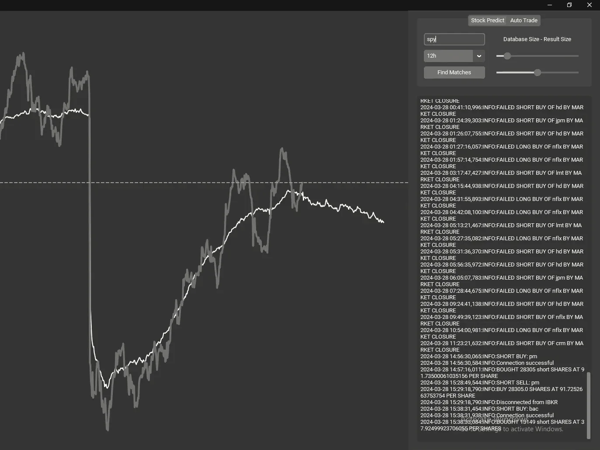
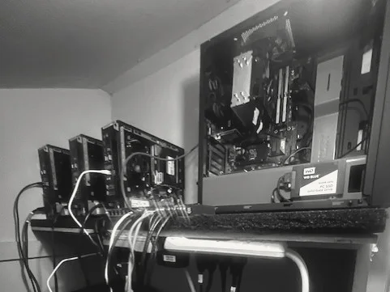

At 15, I started wondering whether short stretches of market data repeat often enough to be useful for predicting the next few hours. I wrote a nearest-neighbor model that looks for similar historical price and volume patterns, then averages what happened afterward. Eventually I connected it to an automated options trader. I ran it with real money for about three months: 61 trades, mostly single options contracts. The log shows +$130.97 after fees and +$288.00 before. Fees consumed 54% of the gross profit. The calls worked out better than the puts, and most of the money was made early. The results were promising: the signal made money before fees, and I think the model had real alpha. I stopped developing it when my data source stopped working.
1Model
Matching windows
I use five-minute price and volume bars. The current window gets z-score normalized so that I can compare its shape with old windows instead of just comparing stock prices. I calculate Euclidean distance against windows that end at the same time of day, which helps keep the comparison from being dominated by differences in intraday trading activity.
z = 4 * (close - close.mean()) / close.std()
v = (volume - volume.mean()) / volume.std()
segment = np.column_stack([z, v])I take the 100 nearest matches, average their following returns, and scale the forecast back to today's price. That gives me a predicted move, although it doesn't tell me how confident I ought to be in it.
top = heapq.nsmallest(100, results, key=lambda r: r[0])Orders
The trader looks at 2-, 3-, and 4-day windows. It only opens a position when all three forecasts agree on direction and clear my 0.5 z-score threshold. I figured agreement across three time scales was better than trusting one prediction.
if long_signals >= 3: # the windows agree
self._execute_trade(ticker, "long", signals)I used the Kelly criterion for position sizing and the Interactive Brokers API for order execution. The exit rule is simpler: close after four hours, or earlier if two of the three windows flip against the position.
kelly_fraction = (b * p - q) / b
2Compute cluster
A nearest-neighbor search is cheap until you start comparing every five-minute window against years of overlapping history, across several symbols and lookback lengths. I tried parallelizing it on one machine. It was still slow.
with mp.Pool(processes=mp.cpu_count()) as pool:
...So I put 20 old computers in my closet and wired them together. I wrote a network protocol to split up the historical search and collect the results. It worked, and building the cluster was a ton of fun. My room would get up to 80 degrees in the dead of winter, I had ducting running out of my closet, and I had to pull power from 3 different rooms to not blow a fuse.

3Live test
I ran it from Oct 20, 2023 to Jan 8, 2024. The log contains 61 trades: 27 calls, 33 puts, and one accidental stock purchase. Each position cost between $70 and $889, averaging $358. I had a very small account. A typical trade made $4.72 gross and cost $2.53 in fees, which explains a lot of the final result.
4Results
| Net profit / before fees | +$130.97 / +$288.00 |
| Fees | $154.44 (53.6% of gross) |
| Average win / loss | +$15.29 / −$18.11 |
| Best / worst trade | +$162.91 MSFT / −$65.10 SPY |
| Return per trade: mean, std dev | −0.04%, 7.9% |
| Deepest drop from a running peak | −$116.82 |
| Trades | Wins | Fees | Net | |
|---|---|---|---|---|
| Calls | 27 | 21 | $64.55 | +$224.86 |
| Puts | 33 | 16 | $85.89 | −$89.89 |
| Stock (accidental) | 1 | 0 | $4.00 | −$4.00 |
| Trades | Wins | Fees | Net | |
|---|---|---|---|---|
| October 2023 | 13 | 9 | $27.07 | +$165.93 |
| November 2023 | 36 | 21 | $96.06 | +$13.35 |
| December 2023 | 8 | 5 | $22.91 | +$10.09 |
| January 2024 | 4 | 2 | $8.40 | −$58.40 |
5Analysis
Fees
The trades made $288.00 before fees, and the broker took $154.44. At roughly $2 in fees per trade, commissions were a large fraction of the return on such small positions. I kept 45% of the gross profit.
Outliers
The average trade returned −0.04% after fees, with a standard deviation of 7.9%. Most of the dollars came from a few large winners. MSFT alone contributed +$209 across 12 trades, more than the total net profit. 61% of positions made money, but losses were larger on average than wins.
Calls / puts
Calls won 21 of 27 trades and made +$225. Puts won 16 of 33 and lost $90. I can't tell from 61 trades whether the bearish signal was worse or whether I just tested it in an unhelpful stretch of the market.
Overrides
I left notes on 26 of the 61 trades. A lot of them record me ignoring the model, entering on weak evidence, or holding longer than I was supposed to. The live log isn't a clean evaluation of the algorithm. It's an evaluation of the algorithm with me occasionally getting in its way.
Sample size
61 trades over about eleven weeks, no benchmark, and only one market environment. The experiment proves I could run the model through to real orders. It doesn't establish that the strategy had a durable statistical edge.
6Data
All the historical price data came through yfinance, which gets it from Yahoo Finance.
yf.download(ticker, period=duration, interval="5m")The free Yahoo data I relied on stopped working, and it was never something I could build a company on. Licensed five-minute historical data at the coverage I needed would have been around $500 a month, so I stopped there.
The figures come directly from the original trading log. Code: github.com/eberhart441/BuyOut. A provisional patent application covers the model.